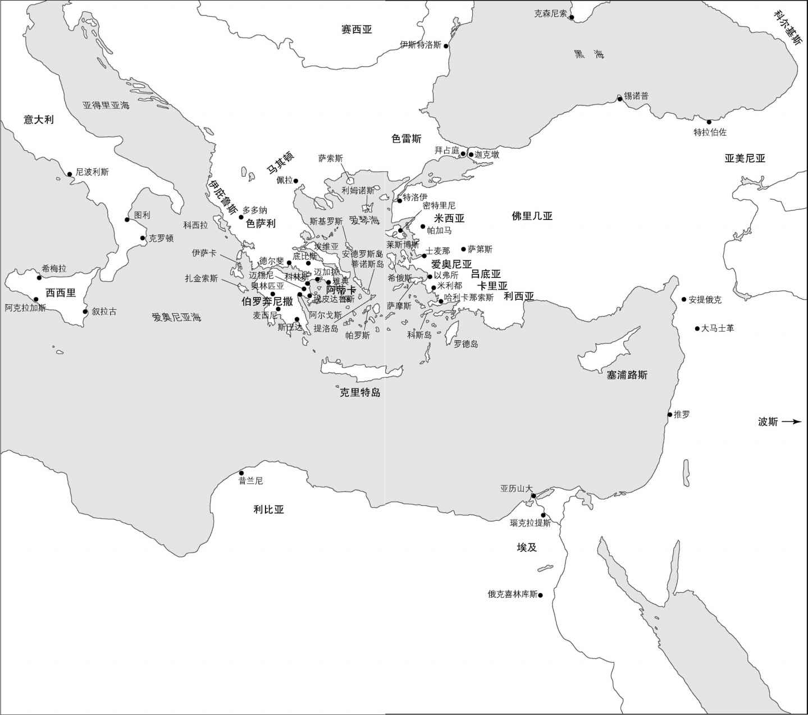
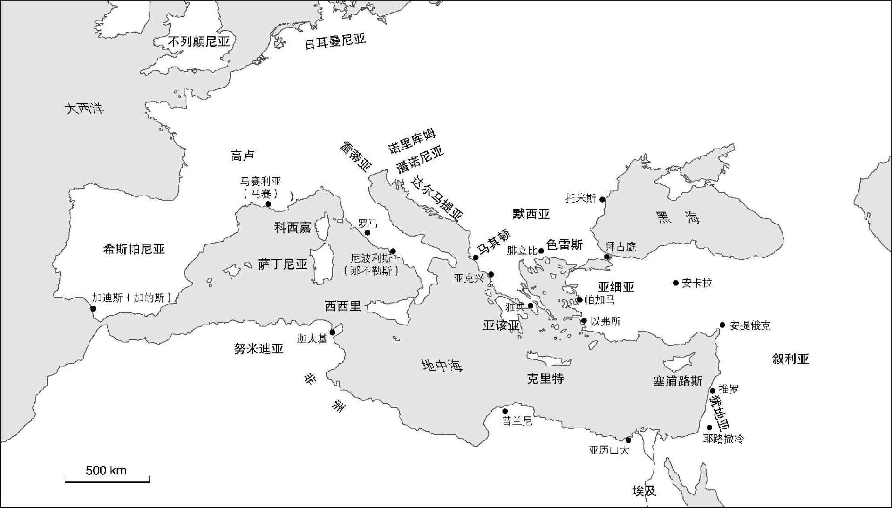
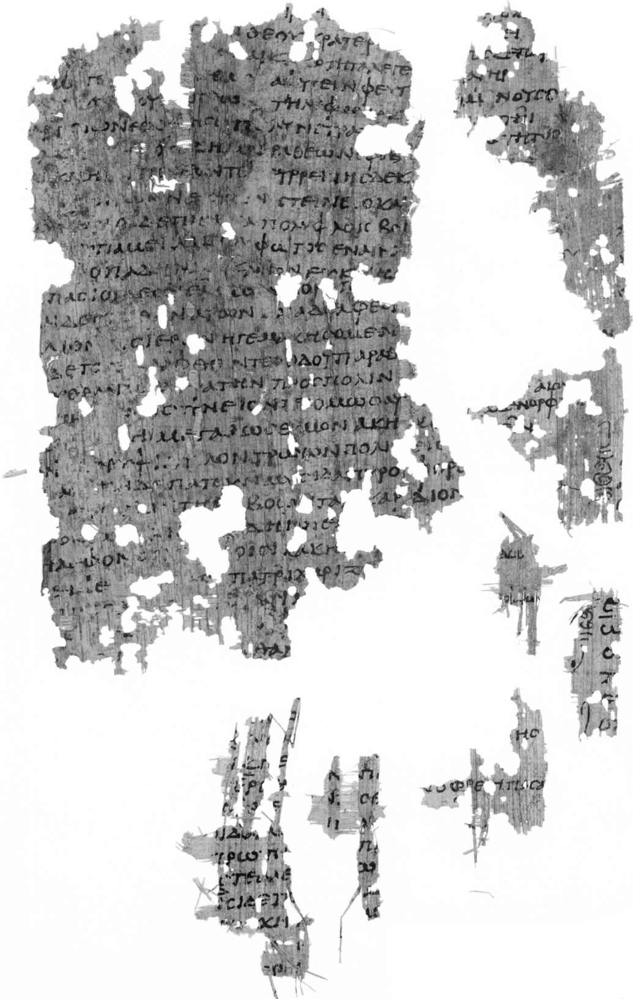

要对时间跨越1 200多年（约公元前750—公元500）的古典文学历史来一番简略概述，大概看似疯人之举。相比之下，“蒙蒂· 派森” [1] 喜剧片里的“全英普鲁斯特梗概大赛”的参赛者有整整15秒钟的时间，却只需总结7卷小说的梗概。不过还是要知其不可而为之，因为如果未来要更详细地考察古典文学的主要文类，一份示意图总能派得上用场。
传统上对古典文学的分期，所对应的无非是我们熟悉的古代史几大块——泛泛地说，把希腊文学分为古风时期、古典时期、希腊化时期和帝国时期；把拉丁文学分为共和国时期和帝国时期（下文中会再提到这些划分）。在研究某一特定的文学（如英国文学、法国文学、德国文学等）时，文学和历史分期基本一致并不罕见，因为大多数人都承认我们可以通过文学来追溯历史变迁。
当然，所有这些分期都是人为建构，是学者们事后创造出来的。事实上由于各个文学或历史时期彼此交织，无法在其间划出一条清晰的分界线。不过只要事先恰当说明，也就是说，只要我们注意不掩盖各个时期之间的连贯性，不暗示每一个特定时期内都是整齐划一的，不把某个特定文本的含义简化为表达某个想当然的“古代”或“尼禄时代”（诸如此类）世界观，那么约定俗成的分期还是有用的。毕竟，文学形式的确随着时间的流逝而发展变化，又无法孤立于更宏大的政治和文化变革，因此，尝试追溯这些发展变化并对具体的阶段加以界定，既合所愿，又有所长。
除了为一个浩瀚的时间段竖立有用的路标之外，文学史术语还能指出不同历史时期在核心主题和关注焦点上的重要区别——比方说，比较一下英国文学中“浪漫主义”和“维多利亚时期”这两个术语，它们所指向的关注点不尽相同。如果一个新文学运动的诞生是由作家们自己宣告的，那么学者的工作就容易多了。例如公元前3世纪，希腊诗人卡利马科斯就发表了一篇关于深奥晦涩文学的宣言，开创了所谓的“希腊化”或“亚历山大里亚派”美学。然而就算作家们没有那么自觉，我们仍然能够回顾性地追溯不同文学运动的兴起，虽然不管是作家本人还是后来的评论家，往往都会夸大该运动与过去的决裂：弗吉尼亚· 伍尔夫的那句玩笑话——“大约在1910年12月，人性发生了改变”（《贝内特先生和布朗夫人》，1924年），就精准地表达了为不同时代划清界限的诱惑与危险。
无论怎样为古典文学分期，有时都会让人感觉像是古代史速成课，不过我更愿意把它看成一件好事：毕竟，虽然文学有时会超越时代，但它始终扎根于所处时代的现实中。因此，古代奇幻小说（见第九章）以颠三倒四的方式反映了古代人对世界的有限认识，正如过去一个多世纪里，现代科幻小说也以同样的方式反映了科技发展和政治格局。伟大的文学作品或许在某种意义上是“无关时间”的永恒杰作，但如果对它起源的历史背景一无所知，便无法充分理解古典（或任何其他）文学。
迈锡尼文化于公元前1200年前后衰落，在其后几个世纪的希腊历史中，写作的技艺尚无人知晓，但口头诗歌和各种形式的说书却蓬勃发展。公元前8世纪初，希腊人修改了腓尼基字母来适应自己的语言，希腊“文学”（也就是书面文本记录）的传统由此开始。由于历史的偶然，就在文学作品被重新发现的同时，天才荷马出现了，因此他创作于公元前725—前700年前后的伟大史诗《伊利亚特》和《奥德赛》不仅是最伟大的，同时也是最早的古典文学作品（想象一下如果英国文学始于莎士比亚横空出世，那场面是何等壮观吧）。传统上把公元前776年第一次奥林匹克运动会开幕到公元前479年希波战争结束这段时期称为“古风时期”，但切勿认为“古风”一词就意味着“原始”，因为这是希腊文学最有活力和最勇于实验的时期之一，那个时代流传下来的史诗和抒情诗堪称史上最震撼人心、最匠心独运的（见第二和第三章）。古风时期还是扩张和殖民的时代，希腊各城邦纷纷把商人和殖民者派往地中海沿岸各地，从马赛利亚（当今的马赛）到埃及的瑙克拉提斯（位于沿尼罗河下游50多英里处），这样的文化活力和多样性反映在这一时期主要作家的作品中，他们来自希腊语世界的各个角落（见地图1）。
相反，古典时期（公元前479—前323），也就是从波斯大败到亚历山大大帝之死这个时期，文学由一个城邦一统天下，那就是雅典。希腊人战胜了庞大的波斯侵略军，这不仅加强了他们对“野蛮人”（非希腊人）的优越感，也使雅典人为自己的利益而利用了一个原本为防御而建的同盟（即为了击退波斯下一波攻势而组成的提洛同盟 [2] ），把它变成了雅典帝国的发动机。帝国的财富，再加上开放的民主文化，吸引了来自整个希腊世界的知识分子和艺术家，雅典因而成为希腊的文化中心，伯里克利在歌颂城邦的赞歌中称之为“全希腊的学校”（修昔底德，《伯罗奔尼撒战争史》2.41）。各种文学形式在雅典民主制度下的公共表演场所兴盛起来：在国家资助的戏剧节上表演悲剧和喜剧（第四章）；在法庭和集会上演讲（第六章）；在政治家和知识分子圈子里编纂历史，他们有志于理解（不止于此）希腊何以赢得希波战争，以及雅典何以在伯罗奔尼撒战争中输给了斯巴达（公元前431—前404；见第五章）。公元前5世纪末被斯巴达击败之后，雅典仍然是文化重镇，它的民主也保留了下来。到了公元前4世纪，伟大的作品仍然层出不穷，特别是演说、历史和哲学等散文体作品（这个时期很少有诗歌流传下来）。和“古风”文学一样，切勿将“古典”混同于“谨慎”或“乏味”：古典时期最优秀的作者都是真正的革新者，影响了后来几个世纪的戏剧、诗歌和散文等主要文学形式。

地图1 希腊世界
希腊化时期（公元前323—前31）从亚历山大大帝之死持续到屋大维在亚克兴角战役中打败马克· 安东尼和埃及的克莱奥帕特拉七世，这一时期的希腊（以及随后的希腊—罗马）文化得到了极大的推广。亚历山大军事扩张的步伐远至波斯湾、印度和阿富汗，他的将军们继承了各式各样的世袭王国，其中最持久的就是埃及的托勒密王朝。托勒密一世在亚历山大港建起了图书馆和博物馆，前者志在收集有史以来的每一部希腊文学文本并为其编目，后者意在成为每一个艺术和科学领域学者的研究中心。托勒密王朝的历任国王继续为这两个机构提供资助，在如此卖弄学问且补贴丰厚的学术氛围中，出现了一个新的文学运动，前所未有地把文学和学术研究融为一体。“亚历山大里亚派”的标志就是博学和文雅。它的权威人物、学者诗人卡利马科斯宣称：“我吟唱的每一句诗都是经过考据的。”早期的文学也不乏典故和创意，但这时诗人的学识越发外露和刻意为之，创新得到了更大的重视。虽说有些作者陷入乏味的晦涩泥沼，急于卖弄小聪明却总是弄巧成拙（举例来说，尼坎德关于各种毒药及其解药的诗歌本身就足以令人汗毛倒竖），但这一时期最优秀的作家仍利用自己的学识为陈腐的文学形式注入了新的生命（例如卡利马科斯和阿波罗尼俄斯对史诗的改革：见第二章），或独创出前所未有的新文学形式（忒奥克里托斯发明了田园诗：见第七章）。
到现在为止，我们讨论的主要都是希腊文学。罗马虽然（根据古代人的估计）建于公元前753年，但现存的拉丁文学都是公元前3世纪中期以后创作的。因此，共和国时期（公元前509—前31）的前几个世纪，也就是从最后一个罗马国王塔克文尼乌斯· 苏佩布被驱逐，宣布采用共和政体，一直到该政体在公元前1世纪的内战中自毁，罗马在文学上是一片空白。然而现存最早的拉丁文学——李维乌斯· 安德罗尼库斯、奈维乌斯和恩尼乌斯的史诗，恩尼乌斯和帕库维乌斯的悲剧，普劳图斯和泰伦提乌斯的喜剧（最后这一类是早期仅存的完整文本）——表明，与“古风”希腊文学一样，不要误以为“早期”就意味着“质朴单纯”。因为这些创作于公元前240—前130年前后的文本不仅反映了罗马人在这一时期惊人的军事成就（罗马因而成为地中海世界的主要力量），同时还以长远的眼光和极大的创意继承和发扬了它们的希腊文学榜样。举例而言，恩尼乌斯就声称自己是荷马转世，是希腊文化转移到罗马的终极象征（第二章）。
这些早期的作家通过改编希腊的文学形式来满足新的读者和兴趣点，并把它们与本土的意大利传统结合起来，开启了“罗马化”过程，后来所有的拉丁作家都在延续这一过程。当希腊自身于公元前146年落入罗马统治者之手，希腊文学和文化对罗马的影响就更加强烈了。老加图这位当时的政治家和作家，就利用了大众对贵族阶层如此亲希腊的焦虑，他反其道而行之，创造了一个简单直接、返璞归真的淳朴罗马人的形象。（老加图的作品显示他曾饱读希腊文学，但他意识到迎合罗马人对附庸风雅的希腊人的鄙视可以带来政治利益，何况希腊人如今还是他们的行省臣民。）不过大多数拉丁作家还是更加开诚布公地承认希腊传统对自己的影响。贺拉斯有意写下的一句悖论式评语最精准地表达了这种强烈的文化互动：“被征服的希腊征服了野蛮的征服者，把艺术/带给粗鄙的拉提乌姆。”（贺拉斯，《书信集》第二部第一首，第156—157行） [3] 换句话说，罗马的军事扩张同样丰富了它的文化。文学创作的中心（先是雅典，后来是亚历山大港）如今是罗马。虽然共和国时期重要的拉丁作家无一出生在罗马，但他们全都去往那里，寻求资助人、读者和功名。
共和国的最后几十年里，贪婪和私利破坏了国家的安定，凯撒与庞培、屋大维与马克· 安东尼等军阀动用前所未有的暴力对付公民同胞。这一时期的文学力图解释天下混乱的意义，也对卢克莱修、卡图卢斯和撒路斯特的政治野心展开了无情抨击。许多拉丁文学最伟大的人物都经历了共和国崩溃而陷入独裁的过程，他们的作品（特别是西塞罗、维吉尔和贺拉斯的作品）都对内战的影响以及内战所催生的帝国制度进行了深刻的探讨（见第二、三、六章）。屋大维（公元前63—公元14）在公元前31年的亚克兴角战役后独掌大权，并于公元前27年改名“奥古斯都”（这个名字暗含着宗教和政治权威），成为第一任罗马皇帝，并实施了帝国制度。他还宣称自己是共和国的复兴者，以此来巧妙地掩盖帝制的革命和暴政性质。
奥古斯都时期（公元前44—公元17）从尤利乌斯· 凯撒被暗杀（以及他19岁的继承人屋大维的崛起）开始，到诗人奥维德之死结束，时间横跨了从共和国到帝国的暴力转型，这一时期的杰出作家（维吉尔、贺拉斯、提布鲁斯、普罗佩提乌斯、奥维德和李维）以非凡的洞察力探讨了文学与权力的关系，他们对近期历史的反思有时很令人不安，却赋予了他们的作品以优势。当然，这些作家中的每一位都对新政体做出了独特的反应，而且他们的反应随着时间的流逝和帝国制度本身的演化而不断变化，所以不存在一种整齐划一的“奥古斯都时期”文学。因此，在公元前1世纪30年代，罗马社会仍然处于四分五裂阶段，既看不到尽头，也看不清谁会成为胜利者，维吉尔和贺拉斯在此时的早期作品，与奥维德在公元前16年那段时间之后、奥古斯都独掌大权已成现实的时代所写的作品，自有云泥之别。
奥古斯都时期的诗人力图与希腊的古典文学相媲美：维吉尔自称继承了荷马的衣钵，贺拉斯是新时代的阿尔凯奥斯（遑论其他所有的希腊抒情诗人），普罗佩提乌斯则声称是新时代的卡利马科斯。然而与“古典”一词一样，认为“奥古斯都时期”（正如用它来标记的英国文学的一个时期 [4] ）就是指“克制”或“和谐”，也可能会掩盖这些作品的革命性。诚然，在对待奥古斯都彻底转变了罗马社会本身的方式上，最能体现这些作家的勇气和抱负，包括有时候他们干脆拒绝赞美它（第三章）。
共和国末期和奥古斯都时期的文学品质出众，以至于传统上称这一时期为拉丁文学的黄金时代，紧随其后的是帝国早期的白银时代（公元17—130）。但这些自带评判内涵的术语如今已经不再流行了，无论如何，它们低估了帝国时期的许多作家在新形势下写作的成功：史诗诗人卢坎、小说家佩特罗尼乌斯、讽刺作家尤维纳利斯以及历史学家塔西佗比起他们的前辈毫不逊色。不足为奇，帝国时期所有拉丁文学关心的一个中心问题，是作家与皇帝的关系，以及作家与文学传统的关系。公元8年，奥古斯都把奥维德流放到黑海，并禁止他粗俗的爱情诗出现在皇帝建于帕拉丁山上的图书馆中；提比略（公元14—37年间在位）迫使拥护共和国的历史学家克莱穆提乌斯· 科尔都斯自杀，还焚烧了他的书籍；而在尼禄（公元54—68年间在位）的逼迫下，卢坎、佩特罗尼乌斯和塞涅卡（皇帝本人的前导师和顾问）全都自杀了。图密善（公元81—96年间在位）尤其偏执和专横，塔西佗、普林尼和尤维纳利斯都曾抨击过他，只不过这些抨击都是在他死去、王朝结束之后进行的，因而还是保持了安全距离。像斯塔提乌斯和普林尼这样颂扬当政皇帝的作家，鄙视他们的谄媚固然容易，服从毕竟从来没有反抗的姿态来得性感。然而他们在体制内写作的决定也是可以理解的，也使卢坎的反帝檄文和塔西佗对自奥古斯都以来这段罗马历史的尖刻分析显得更加令人钦佩。
帝国时期的希腊文学对罗马的权力（参见地图2）也有着同样的担忧。哈德良（公元117—138年间在位）和马可· 奥勒留（公元161—180年间在位）等罗马皇帝对希腊文化的热爱鼓励了希腊文学在罗马保护下走向复兴，因为执政阶层的罗马人渴望与声名远扬的希腊文化扯上关系，有学问的希腊人当然愿意作为中间人成全他们。流传至今的大部分帝国时期的希腊文学都带着一种做作的古典风格，也难免把希腊自治时期的美好旧时光过于浪漫化，但最优秀的作家们还是突破了这种乏味的怀旧，对罗马的权力和拉丁文学做出了更有创造力的回应。拿普鲁塔克的《希腊罗马名人传》来说，他把希腊名人与罗马名人成对匹配，指出他们在德行和罪行两方面的相似之处（亚历山大大帝与尤利乌斯· 凯撒，德摩斯梯尼与西塞罗，等等），打破了双方的文化成见，提醒罗马人，希腊人中也有伟大的武士和政治家，而不只有颓废的美学家；同时也向希腊人证明，罗马人也发展出了高度文明的文化生活，而不仅仅是穷兵黩武的庸人。
古典时代晚期（公元3世纪中期以后）的文学不仅反映了罗马帝国在与日俱增的边境压力之下四分五裂的境况，还反映了基督教成为帝国国教的过程。高品质的古典文学仍在创作中——昆图斯· 士麦那和诺努斯的希腊史诗，奥索尼乌斯、克劳狄安和普鲁登修斯的拉丁语诗歌，阿米阿努斯· 马塞林（他是希腊人，但用拉丁语写作）的罗马历史——然而基督教地位的上升标志着西方文学传统的一个重要转变。尽管如此，虽然许多牧师对古典（非基督教）文化都充满敌意——例如教宗格里高利一世就曾宣称：“同一双唇不会同时发出赞美朱庇特和耶稣基督两人的声音”——但古典文化并不是简单地被基督教彻底取代，而是被基督教广泛吸收，以满足基督教的目的。因此，安波罗修、哲罗姆和奥古斯丁等基督教奠基思想家的作品在很大程度上都得益于他们熟读古典文学。所以说，虽然很多事件都在争夺“古典世界之终结”这一称号——其中最标志性的就是公元410年罗马被西哥特人攻陷，因为那是自公元前390年高卢入侵以来，罗马城第一次被外国侵略者占领——但我们还是应该谨防熟悉的“衰落”模式掩盖其延续性，在古典文本研究中尤其如此，因为古典时代晚期的古典世界在帝国的西半部将自己转变成为拉丁语基督教社会，而在东半部融入了拜占庭。

地图2 奥古斯都时期的罗马帝国
纵览这1 200年左右的文学史之后，现在是时候更详细地考察古典文学最非凡的一面，也就是它高度发达的文类意识了。显然，文学作品的文类到今天仍然是一个重要因素：我们不仅区别笼统的诗歌、散文和戏剧等文类，也会分出次类（特别是在小说这种如今最流行的文学形式中），例如犯罪小说、爱情小说、历史小说等。对其他创作媒介也会做同样的细分，例如把电影分为惊悚片、恐怖片、西部片等。然而古典作家对于他们正在创作的文类有着什么样的形式和规范，可以说比今天的类型小说作家更加清楚。一切古代文学文本都是某一文类的作品，即便它们也跟其他文类交互融合——举例而言，“悲剧历史”就是以悲剧风格撰写的历史。有些现代理论家大概会辩称每个文本都属于一个文类，不属于任何文类的文本是不存在的：因此即便有些作家试图突破传统，写出最古怪的东西，他们仍然会被归类为“实验”文学。若论古典文学的影响，意义最为深远的当属主要文类及其规范的发明。因此，这本通识读本也主要按照文类来组织内容，以反映它的重要性。
但何为文类？首先要注意，文类不是一个永恒不变的柏拉图式形式，而是一组共有某些相似性——可以是形式、表演场合或题材——的文本，随着时间的流逝，这些文本呈现出这些相似性的连续发展。例如，构成古代悲剧这一文类的所有文本共有某些“家族相似性”（他们都是用某一种特定的诗化语言撰写的戏剧文本，都思考人类的困境，都显示神与人的互动，等等），我们因而能够把它们看作是一个可识别的群组。然而虽说任何一个文类都有其特定的“核心”特征，但每一个文类的边界都是流动的，为了实现文学效果，这些边界往往会被打破。
在现代文学和电影中仍然能够看到，每一个文类（类型）都会有某些固有的规则、价值观和预期。它创造自己的世界，帮助作者与受众沟通，因为作者会利用或打破一般的预期，从而创造出各种不同的效果。文类之所以吸引作者，是因为它们提供了一种结构或者可以架构于其上的基础，同时又提供给读者以熟悉的优越感和偏离常规的巧妙享受。最好的作家从传统形式中汲取自己所需的养分，然后创新，在该文类中留下自己的印记，为未来的作家和读者改革文类。换句话说，只要作者不缺乏想象力和创造力，文类就是活力和创造力的源泉，而不是束缚的枷锁。
所有的古代作家都了解他们所选择的文类中谁是顶尖的人物，他们的目标是要媲美和超越那些前辈。在这一与过往文学互动的过程中，两个关键的古代术语分别是imitatio （“模仿”）和aemulatio （“竞争”）。“模仿”不是指盲目的抄袭，而是充满创造力地改写传统；如今的创意写作仍然包括重写过去的文学作品，因为作家通常也都是热情的读者。当然，与过去的伟大作家竞争是一项冒险的事业——正如贺拉斯所说，“无论谁渴望与品达媲美，/都是用伊卡洛斯 [5] 黏蜡的翅膀/努力飞翔”（《颂诗集》第四部第二首，第1—4行） [6] ——然而古代最优秀作家的杰出特点，正是他们根据当下的情形对昔日的伟大作品做出了回应。
古典文学的特点是对文类分出高低，高端是“阳春白雪”的史诗、悲剧和历史等形式，低端是“下里巴人”的喜剧、讽刺作品、哑剧和诙谐短诗。“阳春白雪”还是“下里巴人”取决于题材是否严肃、语言是否高尚、语气是否庄重等。在这个等级中处于较低端的许多文类善辩地通过反对某个高端形式来定义自己：因而比方说，喜剧作家会嘲笑悲剧，称它不切实际又夸夸其谈，为的是明确肯定自己作品的价值，而讽刺作品嘲笑史诗和哲学（及其他文类），企图为生活提供有意义的指导。最后值得注意的是，有些文类延续的时间比其他文类更长：罗马爱情哀歌只繁荣了半个世纪（见第三章），而史诗始终存在，也始终都在变化（第二章）。总而言之，在考察某一部古代文学文本时，只有考虑到它处在该文类发展演化的哪一个阶段，以及它如何发扬了它所继承的传统并对其加以变革，才能够正确地理解这部文本。
在结束这一绪论章节之前，来考察一下现有的古典文本情状如何吧。绝大多数（至少90%）的古典文学都已佚失；因此，打个比方，公元前5世纪，雅典的主要年度戏剧节上创作的（至少）900部悲剧中，完整地保存下来的只有31部，也就是说在古代雅典的这个最有声望也最受欢迎的文类中，保存下来的文本仅占3%。有些损失要比其他的更加严重：金嘴狄翁那些关于鹦鹉和蚊子的颂歌未能幸存下来，并不会令多少人辗转难眠。而文本遗存之无常相当残酷：我们只有索福克勒斯的7部悲剧（他总共写了逾120部戏剧），却有公元4世纪的希腊修辞学家里巴尼乌斯的1 600多封信函，证明（如果这还需要证明的话）宇宙充满偶然，生活无关公平。
古代文本，无论是完整的还是片段，要么是以连贯而未中断的抄本形式（一种手稿传统）流传下来，要么写在古代莎草纸上，近年来被挖掘出土。和15世纪印刷机发明之前的所有文本一样，古典文本都是由熟练的抄写员（通常是奴隶）手抄的。他们尽可能精准地誊抄“原文”，但在反复抄写的过程中，错误必然会进入文本，特别是因为古代文本没有断词，也几乎没有标点符号，要比现代文本（尤其是印刷文本）难读得多。古典学者的任务之一，就是要找出这些错误并消除它们。
因此，古典文学流传至今，就是一个长期循序渐进的挑选和缩小范围的故事，在此过程中，被阅读和重新誊抄的文本越来越少。影响这一过程的因素有很多，有些是有意为之，有些是偶然因素。前者中最重要的有：选用为学校课本（举例而言，如果一个文本被认为文字过难或者过于粗俗，就会有麻烦）；对文选或“精彩段落”文集（像现代的“引用语辞典”）的依赖，会导致完整作品的消失；学术“正典”——每个文类中的“最优秀”作家名单，如“九大抒情诗人”或“三大悲剧作家”——的影响，也同样影响了学校里文本的选用；最后也是最不可捉摸的，是公众的品味和品质观念的影响，因为正如贺拉斯所说，“唯独诗人若只能达到平庸，无论天、人或柱石都不能容忍”（《诗艺》，第372—373行） [7] 。其他因素与所涉文学的性质无关：蠹书的虫子、霉菌，还有图书馆被付之一炬，当年亚历山大港那座宏伟的图书馆中藏有50万卷莎草纸，全都在公元前48年尤利乌斯· 凯撒攻城时化为焦土。
此间还有更多的制约因素，例如文本的物理形状的改变，从莎草纸卷变成更实用的抄本，后一种形式接近于现代书籍。这一转变始于公元1世纪末，到4世纪末基本完成，也就意味着只有那些以新的形式重新誊抄的作品，才会有较大的机会留存下来。抄本形式尤其受到基督徒的偏爱，这就把我们带到了最后一道难关前面，也就是基督教审查和遗漏。不过我们应该注意不要对基督徒太苛责，因为他们确实承认非基督教文本的品质，想出了不少独具匠心的法子把它们变得令人满意：例如用基督教的方式把它们寓言化，像维吉尔的第四部《牧歌》就被解读为耶稣基督诞生的先兆（见第七章）。何况还是中世纪所有信奉基督教国家的修道院和天主教堂图书馆，以及这个时期的伊斯兰教哲学家和学者，为我们保存了那些文本本身，直到它们在文艺复兴时期被重新发现，并点燃了文艺复兴的火花。

图1 埃及俄克喜林库斯出土的一张莎草纸片，1897年发现，2005年首次出版。该文本是由公元前7世纪的诗人阿尔基洛科斯创作的，叙述了希腊人首次攻打特洛伊的战争，因为他们错误地攻打另一个城邦并被其国王忒勒福斯打败，希腊人以惨败告终
所幸，有些历史的偶然倒令人喜出望外，仍有古典文本不断被发现和出版，它们多半以莎草纸片的形式在埃及大大小小的垃圾堆里保存下来：因此过去几年，两位最伟大的希腊抒情诗人萨福和阿尔基洛科斯那些从前无人知晓的作品得以出版问世（首版分别出版于2004年和2005年：见图1）。多光谱成像等新技术的出现，使我们有可能阅读那些从前无法辨认的文本，例如写在烧焦的莎草纸卷上的文本，那些莎草纸因为公元79年维苏威火山爆发而被碳化了。这类新发现和新方法仍在改变着我们对古典文学的看法。
[1] 英国的一组超现实幽默表演团体，此处提到的喜剧片为《蒙蒂· 派森的飞行马戏团》。——译者注。除非另有说明，本书中文脚注均为译者注。
[2] 提洛同盟成立于公元前478年，是希腊城邦组成的一个联盟，由雅典领导。在波斯第二次入侵希腊的最后阶段，希腊在普拉提亚战役中获得胜利后，为继续对抗波斯帝国而成立了此同盟。
[3] 译文引自李永毅译注，《贺拉斯诗全集：拉中对照详注本（上）》，中国青年出版社2017年版，总第6411页。诗句中的“拉提乌姆”为古意大利半岛中部一地区，拉丁语原本是此地的方言。
[4] 在英国文学中，18世纪被称为“奥古斯都时期”、新古典主义时期和理性主义时期。“奥古斯都时期”这一名称源于这一时期的许多作家都自觉地模仿古罗马奥古斯都时期的作家维吉尔和贺拉斯。
[5] 伊卡洛斯是希腊神话中代达罗斯的儿子，在与代达罗斯一起使用蜡造的翅膀逃离克里特岛时，因飞得太高，双翼遭太阳熔化而跌落水中丧生。
[6] 译文引自李永毅译注，《贺拉斯诗全集：拉中对照详注本（上）》，中国青年出版社2017年版，总第2462页。
[7] 译文引自罗念生、杨周翰译，《亚里士多德〈诗学〉和贺拉斯〈诗艺〉》，人民文学出版社1962年版，第156页。杨周翰先生为“柱石”加了注释：罗马习惯，新诗都张贴在书店外面的柱子上，此处实指书店、书商。